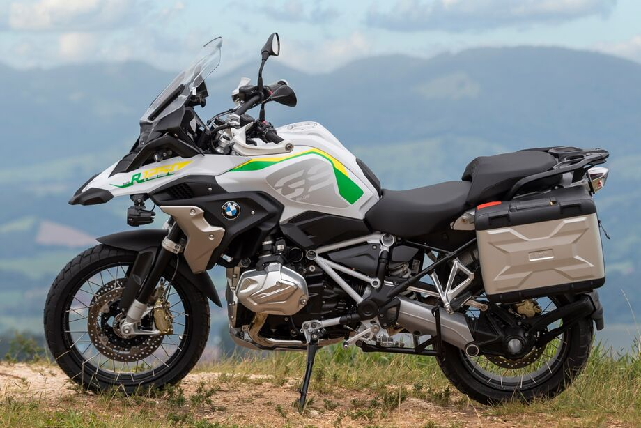

<!DOCTYPE html>
<html lang="en">
<head>
    <meta charset="UTF-8">
    <meta name="viewport" content="width=device-width, initial-scale=1.0">

    <title>BMW</title> 
    <link rel="stylesheet" href="style.css">
</head>
<body>

</body>
</html>
<header class="cabecalho">

    <h1>Moto BMW</h1>

<ul>
    <li>Ruan Francisco Bosco</li>
    <li>Colégio Estadual Joaquim Maria Machado de Assis</li>
</ul>
</header>

<p>Em 1980 nascia um mito, uma moto para grandes viagens por qualquer tipo de estrada: a BMW GS, que agora completa 40 anos. A família de modelos todo-terreno da BMW estreou com a R 80 GS já inovando em tecnologia e vencendo o rali Dakar na primeira participação. </p>
<p>Aplicando em uma big trail o motor alemão de 2 cilindros opostos, que chamamos de “Boxer”, a BMW Motorrad elevou o patamar de performance das motos de uso misto com 797cc. No final da década de 70, as motos para uso misto ainda eram uma criação recente e não passavam de 500cc. </p>